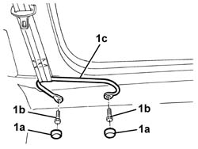
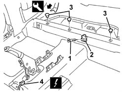
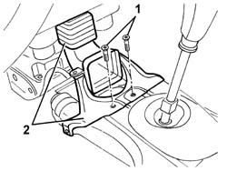
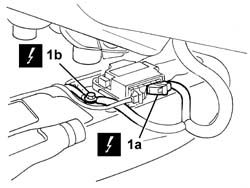
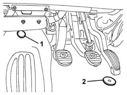
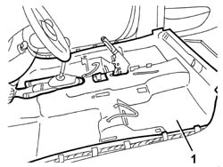

7040L10 CABIN FLOOR CARPET - R R
- Path
- Procedures > 70 FITTINGS > 7040 BODYSHELL INTERIOR TRIMS AND FITTINGS > 7040L CABIN FLOOR COVERING > 7040L10 CABIN FLOOR CARPET - R R
- Kind
- repair procedure (removal / refitting; the operation number is the code)
- Applies to
- all engines; all production periods
- Interactive page
- https://sloeber94.github.io/elrnDB-aGt/en/#/125001887
Applies to: all engines; all production periods
 Removing
Removing
 Refitting
RefittingOp. 7045A10 L/H OR R/H FRONT SEAT (ONE) - R+R
(right and left)
Op. 7050A22 REAR SEAT CUSHION - R+R
(right and left)
- 2127E10 hydraulic speed selection system control unit - r r
(if fitted)
Op. 7040A65 PASSENGER COMPARTMENT BOX LOCK , ONE , R R
(right and left)
Op. 3380A44 HANDBRAKE/LINKAGE PROTECTION - R+R
Op. 7040L28 TUNNEL SWITCH PANEL - R R
Op. 7040L40 REAR COMPARTMENT SCUFF STRIP - R R
(right and left)
Op. 5010C44 AIR DIFFUSER TO REAR SEAT - R+R
(right and left)
Op. 7040A37 FUSE BOX COVER - R R
Op. 7040A95 REINFORCEMENT BRACKET ONE LH OR RH BETWEEN FACIA SUPPORT BEAM AND BODY R R
Op. 5010B45 DUCT FROM CLIMATE CONTROL SYSTEM - R R
(right and left)
1. From both sides of the car, remove the covers (1a) and undo the bolts (1b), then move the seat belt mounting brackets (1c).

Applies to: all engines; all production periods
1. Undo the bolt.
2. Remove the rear seat cushion pin retainer.
3. Release the carpet retaining buttons using the special tool.
 | Name | Country |
|---|---|---|
3 | Scraper blade | 1.823.015.000 |
4. Disconnect the electrical connection.
Name | Connector | |
|---|---|---|
4 | Handbrake switch | See I40 HANDBRAKE SWITCH |

Applies to: all engines; all production periods
1. Undo the bolts securing the bracket for the air duct to the rear seats.
2. Remove the bracket with duct.

Applies to: all engines; all production periods
1. Disconnect the electrical connections (1a, 1b).
Name | Connector | |
|---|---|---|
1a | Air bag control unit | See M60A AIR BAG CONTROL UNIT ( FACIA ) |
Name | Connector | |
|---|---|---|
1b | Air Bag earth | See C50A AIR BAG EARTH ( FACIA ) |

Applies to: all engines; all production periods
1. From both sides of the car, undo the carpet retainer.
2. Unscrew the accelerator pedal end of travel.

Applies to: all engines; all production periods
1. Remove the carpet.

Applies to: all engines; all production periods
Refitting
RemovingCheck that the carpet is undamaged.
Position the carpet.
Tighten the accelerator pedal end of travel.
From both sides of the car, screw on the carpet retainer.
Connect the Air Bag control unit electrical connections.
 | Fastening | Component | Ø | Value (daNm) |
|---|---|---|---|---|
- | Bolt | AIR BAG SYSTEM EARTH | M8 | 2.4 |
Refit the bracket with air duct for the rear seats and tighten its bolts.
Connect the handbrake electrical connection.
Engage the carpet retaining buttons.
Position the rear seat cushion pin retainer and secure it with the bolt.
From both sides of the car, position the seat belt mounting brackets and secure them with the bolts, then fit the covers.
| Fastening | Component | Ø | Value (daNm) |
|---|---|---|---|---|
- | Bolt | FRONT SEAT BELT FIXED END | M7/16'' | 4.0 |
Op. 5010B45 DUCT FROM CLIMATE CONTROL SYSTEM - R R
(right and left)
Op. 7040A95 REINFORCEMENT BRACKET ONE LH OR RH BETWEEN FACIA SUPPORT BEAM AND BODY R R
Op. 7040A37 FUSE BOX COVER - R R
Op. 5010C44 AIR DIFFUSER TO REAR SEAT - R+R
(right and left)
Op. 7040L40 REAR COMPARTMENT SCUFF STRIP - R R
(right and left)
Op. 7040L28 TUNNEL SWITCH PANEL - R R
Op. 3380A44 HANDBRAKE/LINKAGE PROTECTION - R+R
Op. 7040A65 PASSENGER COMPARTMENT BOX LOCK , ONE , R R
(right and left)
- 2127E10 hydraulic speed selection system control unit - r r
(if fitted)
Op. 7050A22 REAR SEAT CUSHION - R+R
(right and left)
Op. 7045A10 L/H OR R/H FRONT SEAT (ONE) - R+R
(right and left)
Check the operation of the system using the Examiner or another tester.
Topics linked from this page (11)
- 3380A44 HANDBRAKE/LINKAGE PROTECTION - R+R
- 5010B45 DUCT FROM CLIMATE CONTROL SYSTEM - R R
- 5010C44 AIR DIFFUSER TO REAR SEAT - R+R
- 7040A37 FUSE BOX COVER - R R
- 7040A65 PASSENGER COMPARTMENT BOX LOCK , ONE , R R
- 7040A95 REINFORCEMENT BRACKET ONE LH OR RH BETWEEN FACIA SUPPORT BEAM AND BODY R R
- 7040L20 TUNNEL TRIM - R R
- 7040L28 TUNNEL SWITCH PANEL - R R
- 7040L40 REAR COMPARTMENT SCUFF STRIP - R R
- 7045A10 L/H OR R/H FRONT SEAT (ONE) - R+R
- 7050A22 REAR SEAT CUSHION - R+R